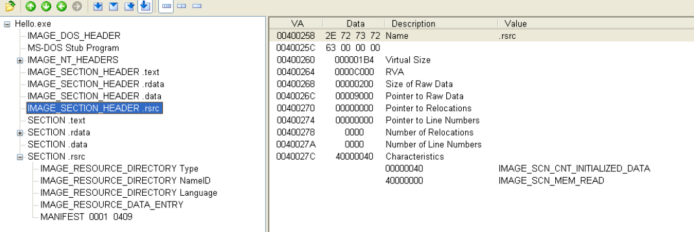
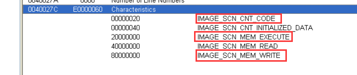

练习#1
运行练习文件（HelloTls.exe）弹出消息框 单击 确定 结束程序
接下来使用OD打开程序并运行TLS文件 出现如图对话框
我们发现对话框与源程序的内容不同 单击 确定 终止程序 如图
出现这种情况的原因在于程序运行EP代码前先调用了TLS回调函数 而这一函数中含有反调试代码
TLS
IMAGE_DATA_DIRECTORY[9]
如果在编程中用了TLS回调函数 PE头文件就会设置TLS表项目 如下图
IMAGE_TLS_DIRECTORY
1 | IMAGE_DATA_DIRECTORY[9]:IMAGE_TLS_DIRECTOR |
IMAGE_TLS_DIRECTORY结构体有两种版本 分别为32位版本和64位版本 我们用PEView查看IMAGE_TLS_DIRECTORY结构体 成员如图

代码逆向中最重要的时Address of Callbacks 该值指向含有TLS回调函数地址的数组 这意味着可以向同一程序注册多个TLS回调函数
回调函数地址数组
回调函数地址数组
数组中实际储存的是TLS回调函数的地址 进程启动运行时 逐一调用储存在该数组的函数
TLS回调函数
TLS(Thread Local Storage,线程局部储存)，主要用于给线程独立的传值，由于线程不拥有进程的资源，所以几个同一进程的几个线程需要独立赋值时的需要通过TLS技术。每个线程创建时都会分配一个index所以，这个索引index是全局变量，线程根据index来获取其他线程传过来的返回值。TLS有一个特点，就是它通常在程序EP前就要运行，所以起始TLS才是个程序真正的开始。利用这一特点，可以用来进行的程序的反调试。
创建和终止某线程时 TLS回调函数都会自动调用执行 前后共两次 执行EP代码前 TLS回调函数会先被执行 常用于反调试技术
练习#2
TlsTest.exe程序使用VC++编写的 充分展现了TLS回调函数的方法 源代码如图：
1
2
3
4
5
6
7
8
9
10
11
12
13
14
15
16
17
18
19
20
21
22
23
24
25
26
27
28
29
30
31
32
33
34
35
36
37
38
39
40
41
42
43
44
45
46
47
48
49
50
51
52#include<windows.h>
#pragma comment(linker, "/INCLUDE:__tls_used")
void print_console(char* szMsg)
{
HANDLE hStdout = GetStdHandle(STD_OUTPUT_HANDLE);
WriteConsoleA(hStdout, szMsg, strlen(szMsg), NULL, NULL);
}
void NTAPI TLS_CALLBACK1(PVOID DllHandle, DWORD Reason, PVOID Reserved)
{
char szMsg[80] = {0,};
wsprintfA(szMsg, "TLS_CALLBACK1() : DllHandle = %X, Reason = %d\n",
DllHandle, Reason);
print_console(szMsg);
}
void NTAPI TLS_CALLBACK2(PVOID DllHandle, DWORD Reason, PVOID Reserved)
{
char szMsg[80] = {0,};
wsprintfA(szMsg, "TLS_CALLBACK2() : DllHandle = %X, Reason = %d\n",
DllHandle, Reason);
print_console(szMsg);
}
#pragma data_seg(".CRT$XLX")
PIMAGE_TLS_CALLBACK pTLS_CALLBACKs[] = {TLS_CALLBACK1, TLS_CALLBACK2, 0};
#pragma data_seg()
DWORD WINAPI ThreadProc(LPVOID lParam)
{
print_console("ThreadProc() start\n");
print_console("ThreadProc() end\n");
return 0;
}
int main()
{
HANDLE hThread = NULL;
print_console("main() start\n");
hThread = CreateThread(NULL, 0, ThreadProc, NULL, 0, NULL);
WaitForSingleObject(hThread, 60*1000);
CloseHandle(hThread);
print_console("main() end\n");
return 0;
}
TlsTest.cpp源代码中注册了2个TLS回调函数（TLS_CALLBACK1 TLS_CALLBACK2）他们也非常简单 只是将DllHandle与Reason这2个参数输出到控制台 然后终止退出 mian（）函数也是 创建用户线程（ThreadProc）后终止 main{}函数与ThreadProc（）内部分别将函数分开/终止日志输出到控制台 程序运行画面
接下来时各函数调用顺序
DLL_PROCESS_ATTACH
进程的主线程调用main()函数前 已经注册的TLS回调函数（TLS_CALLBACK1 TLS_CALLBACK2）会先被执行 此时Reason的值为1（DLL_PROCESS_ATTACH）
DLL_THREAD_ATTACH
所有TLS回调函数完成调用后 mian（）函数开始执行 创建用户线程（ThreadProc）前 TLS回调函数会被再次执行 此时此时Reason的值为2（DLL_THREAD_ATTACH）
DLL_THREAD_DETACH
TLS回调函数全部被执行完毕后 ThreadProc（）线程函数开始调用执行 执行完毕后Reason=3（DLL_THREAD_DETACH） TLS回调函数被调用执行
DLL_PROCESS_DETACH
ThreadProc（）线程函数执行完毕后 一直在等待线程终止的main（）函数也会终止 此时Reason的值为0（DLL_PROCESS_DETACH）TLS回调函数最后一次被调用执行 以上TlsTest.exe中 2个TLS回调函数分别被调用了4次 总共为8次 接下来看看调试方法
调式TLS回调函数
若直接在调试器中打开有TLS回调函数的程序 则无法打开TLS函数 因为在EP代码执行之前就被调用执行了 使用特定插件存在一个“暂停在TLS回调函数”的选项 使用起来更加方便
这样就可以调试TLS回调函数了 这个函数很简单 运行的代码也不多
手动添加TLS回调函数
首先确定IMAGE_TLS_DIRECTORY结构体与TLS回调函数要放在哪个位置 向某个PE文件添加代码或数据时 有3种方法
1）添加到节区末尾的空白区域
2）增加最后一个节区的大小
3）在最后添加新节区
这里我们采用第二种方法 使用PEView查看Hello.exe文件的最后一个节区（.rsrc）的节区头

可以看到最后一个节区（.rsrc）的Pointer to Raw Data=9000 Size of Raw Data=200 所以 PE头中定义的文件整体大小为9200 考虑到要添加代码和数据的大小 我们将最后一个节区的大小增加200 使用HXD工具打开文件 光标移至最后一个节区的菜单栏选择编辑-插入字节 如图所示 向字节数中输入200 单击ok后 就可以看到增加了200个字节
编辑PE文件头
.rsrc节区头
对比图9 分别修改.rsrc节区头中的Size of Raw Data和Characteristics的值 即Size of Raw Data=400 Characteristics=E0000060 如下图
Characteristics=E0000060的含义如图

在原有的属性上增加了这三个属性
IMAGE_DATA_DIRECTORY[9]
接下来设置TLS表（IMAGE_NT_HEADERS—IMAGE_OPTIONAL_HEADER—IMAGE_DATA_DIRECTORY[9]）的值 我们可以从图9中看到扩展程序的起始地址为9200（文件偏移） 在PEView在查看该地址为C200 我们将在该地址处创建IMAGE_TLS_DIRECTORY结构体 因此修改PE头中的IMAGE_DATA_DIRECTORY[9] 如图所示
完成后保存文件用PEView查看文件
设置IMAGE_TLS_DIRECTORY结构体
接下来设置IMAGE_TLS_DIRECTORY结构体 只要把TLS回调函数注册其中即可 编辑结构体
我们在文件偏移9200地址处创建了IMAGE_TLS_DIRECTORY结构体 AddressOfCallBacks成员的值为40c224 他是TLS回调函数数组的起始地址 只要把TLS回调函数的地址放入该数组 即可注册成功 使用PEView查看
编写TLS回调函数
上述工作全部完成后 下来开始编写函数 我们在OD中编写如图代码 从40c230处开始
完成后保存修改都文件即可
最终完成
打开刚才的文件 就会发现已经ok了 表明已经成功（虽然我这个出了点小差错 但表明TLS回调函数添加成功了哈哈哈哈）
反正我成功了哈哈哈哈哈哈哈哈哈 我不管！！！